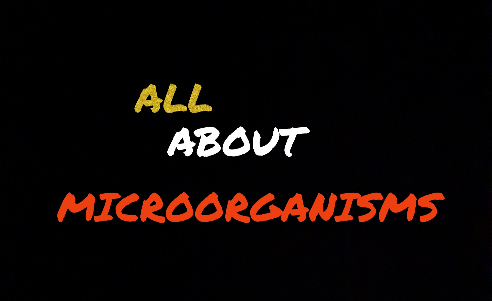

Microorganisms
We all have at least once in our lives heard about some things called "microorganisms" . But have we ever wondered
what actually are they? This web-application will tell you all about microorganisms.
 Organisms that are so small and can only be seen through a microscope are called microorganisms.
Organisms that are so small and can only be seen through a microscope are called microorganisms.
A microorganism may exist in its single-celled form or a colony of cells.
Click on "About Microorganisms" on the top to know more about microorganisms.